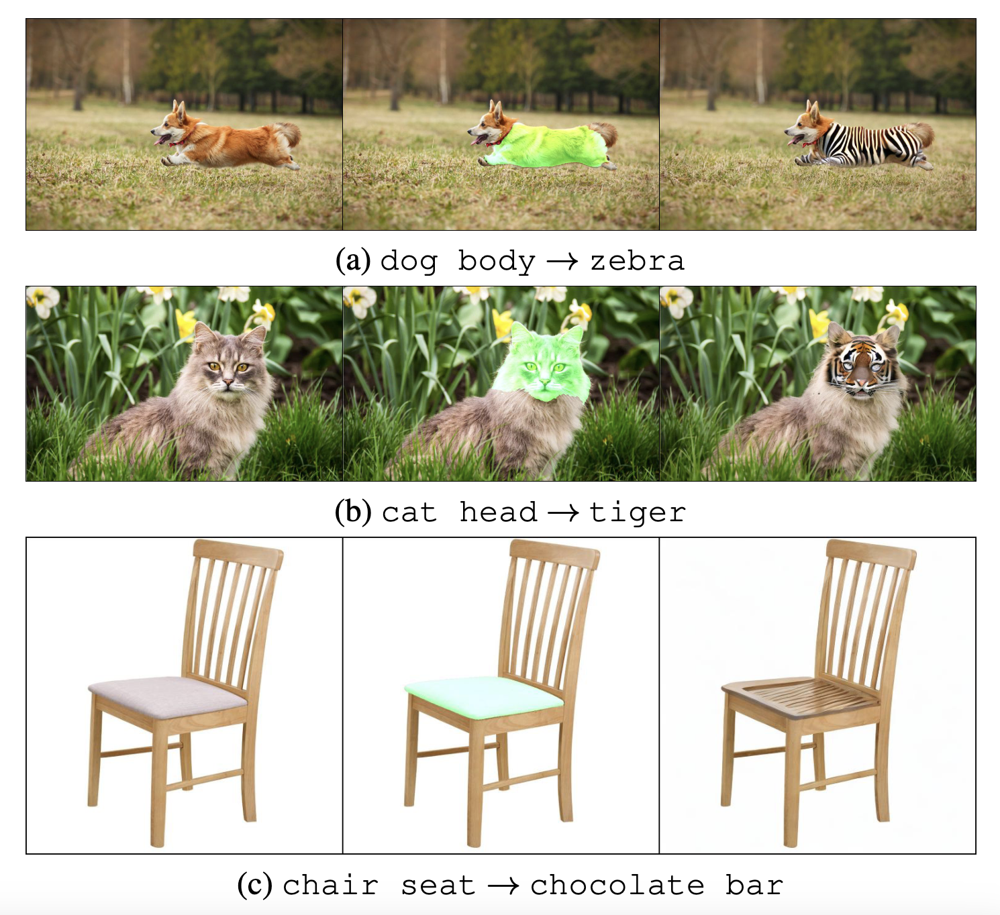

Open-Vocabulary Object Detection and Part Segmentation
Supplementary Material
- Part Segmentation Datasets
- Previous Open-Vocabulary Object Detection Methods
- Visualization of Open-Vocabulary Part Segmentation
- Applications of Open-Vocabulary Part Segmentation
- Revised Section 4: Our Method (PDF)
- Revised Section 5: Experiment (PDF)
- Source Code
Part Segmentation Datasets
Recent advances in open-vocabulary object detection have made surprising development in enlarging the number of object categories from a pre-determined set by training datasets to any object in the open world. This is a crucial step for the vision system to make effect in the real world. Towards the next step, for a deeper understanding to object structure, mobility, functionality, and practical applications such as behavior analysis, robotics manipulation, image-editing, only object-level perception is not sufficient, while the fine-grained recognition ability of part segmentation is necessary. We show three sources of part segmentation datasets, including PartImageNet, Pascal Part and PACO.
 |
|---|
Previous Open-Vocabulary Object Detection Methods
Since a part is the fine-grained version of an object, an intuitive idea is to directly apply existing open-vocabulary object detection methods to solve the part detection/segmentation task, including RegionCLIP(only box), Detic and VLDet. However, they do not show good generalization on part-level recognition. Although conceptually similar to open-vocabulary object detection, localizing and classifying the fine-grained object parts are essentially more challenging.
 |
|---|
Visualization of Open-Vocabulary Part Segmentation
Beyond open-vocabulary object detection, we propose that the detector should be able to predict both objects and their parts. This open-world fine-grained recognition ability is in demand for an intelligent vision system but is only realized in a limited number of categories up to now. In this paper, we move forward to going denser with open-vocabulary part segmentation: Left figure shows segmenting dog and its parts in different granularities. Right figure demonstrates more visualization results.
 |
|---|
Applications of Open-Vocabulary Part Segmentation
We provide two real applications of part segmentation: part-level robotic manipulation and part-level image editing. (1) For part-level robotic manipulation, we first locate the part segmentation, for example, cup handle, and then drive the robot gripper to grasp the cup handle. (2) For part-level image editing, we first obtain text-prompt part segmentation in the image, for example, dog body, and then use the in-painting version of Stable Diffusion to accomplish the inference.
|  |
|---|
Source Code
Our code is public in Link.